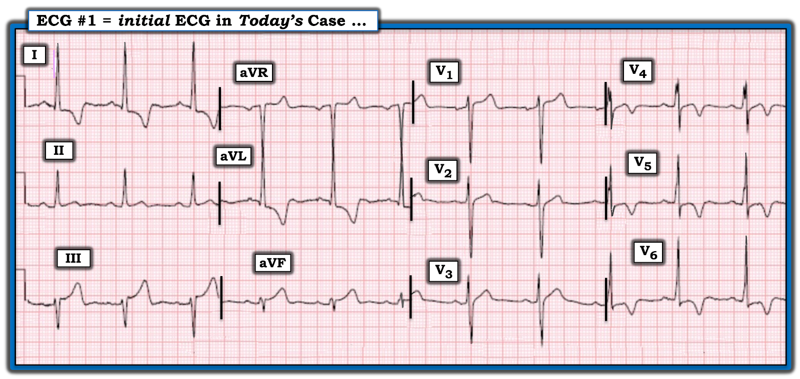
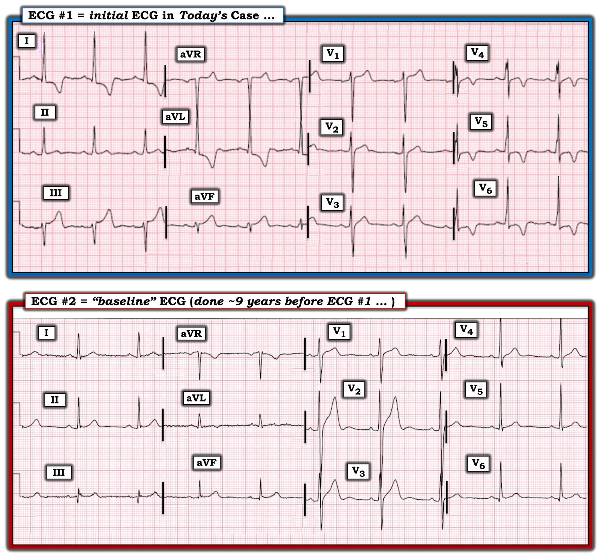
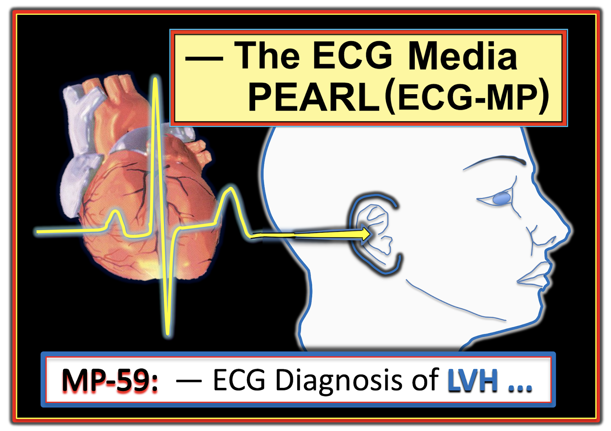
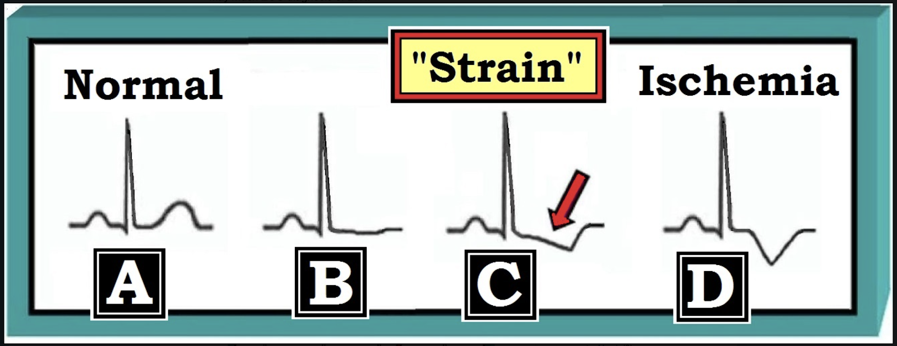

ECG Blog #412 — Có chỉ định thông tim không?
Điện tâm đồ ở Hình 1 được ghi từ một người đàn ông trung niên có tăng huyết áp đã biết — đến khoa cấp cứu (Emergency Department) vì đau ngực — CP (Chest Pain) — trong suốt 2-3 ngày trước đó.
CÂU HỎI:
- BẠN sẽ đọc điện tâm đồ ở Hình 1 như thế nào?
- Có nên kích hoạt phòng thông tim (cath lab) không? Nếu không — Tiếp theo làm gì?


Điện tâm đồ Ban đầu trong Ca bệnh Hôm nay:
Nhịp trong điện tâm đồ #1 là nhịp xoang, tần số 65-70 lần/phút. Các khoảng (PR - QRS - QTc) đều trong giới hạn bình thường. Trục hơi lệch trái (khoảng -10 độ — như được gợi ý bởi QRS biên độ nhỏ hơi âm ở chuyển đạo aVF — nhưng chưa đủ âm để đạt tiêu chuẩn LAHB, vì QRS ở chuyển đạo II hoàn toàn dương).
- Tiêu chuẩn điện thế của LVH dễ dàng được thỏa ở nhiều chuyển đạo (Sóng R rất cao ở chuyển đạo I — R ở chuyển đạo aVL ~20 mm [do chồng lấp với sóng S ở chuyển đạo aVR] — sóng S sâu ở V1,V2 + sóng R cao ở V5,V6 ≥35 mm).
- Để biết thêm về tiêu chuẩn điện tâm đồ của LVH — Xem PHẦN BỔ SUNG bên dưới và/hoặc ECG Blog #73 và ECG Blog #245.
Về Thay đổi Q-R-S-T:
- Sóng Q — Sóng q vách bình thường rất nhỏ ở các chuyển đạo I,aVL.
- Tăng tiến sóng R — Tăng tiến sóng R bình thường — với vùng chuyển tiếp phù hợp (nơi sóng R trở nên cao hơn độ sâu của sóng S) nằm giữa chuyển đạo V3 và V4.
- Thay đổi ST-sóng T — Có ~1 mm điểm J chênh xuống ở vùng bên, kèm ST dạng vòm (coving) và sóng T đảo ngược sâu, đối xứng (thấy ở các chuyển đạo I,aVL; V4,5,6). Có 1-2 mm ST chênh lên ở các chuyển đạo III,aVF và V1 — trong đó sóng T ở III và aVF cao và "đầy đặn" một cách không tương xứng (với hình ảnh soi gương ngược lại so với điểm J chênh xuống và sóng T đảo ngược sâu ở các chuyển đạo bên).
Nhận định CỦA TÔI về điện tâm đồ #1:
Là một bản ghi đơn lẻ ở bệnh nhân đau ngực 2-3 ngày — đây là một điện tâm đồ khó đọc. Suy nghĩ của tôi như sau:
- Nhịp xoang. LVH rõ rệt được gợi ý bởi biên độ QRS tăng rất nhiều ở nhiều chuyển đạo ở bệnh nhân tăng huyết áp lâu năm này (Xem Hình 3 ở PHẦN BỔ SUNG bên dưới về các tiêu chuẩn điện tâm đồ của LVH mà tôi ưa dùng).
- Kết luận tôi viết trên một bản ghi như thế này sẽ là: "LVH rõ rệt và 'tăng gánh' và/hoặc thiếu máu cục bộ — cần đối chiếu lâm sàng."
- "Tăng gánh" thất trái đơn thuần thường tạo ST chênh xuống dốc xuống kèm sóng T đảo ngược không đối xứng ở ≥1 chuyển đạo bên (tức là các chuyển đạo I,aVL; V5,V6). Dù không hiếm gặp sóng T đảo ngược sâu, đối xứng ở các chuyển đạo bên ở bệnh nhân tăng huyết áp nặng — "tăng gánh" thất trái đơn thuần nói chung không đi kèm ST dạng vòm, như thấy rõ ở chuyển đạo V4 của điện tâm đồ #1 (Xem Hình 4 ở PHẦN BỔ SUNG bên dưới về hình ảnh điện tâm đồ của "tăng gánh" thất trái điển hình ).
- Ngoài ra — ST chênh lên ở chuyển đạo III và aVF, cùng với sóng T "quá đầy đặn" (hypervoluminous) ở các chuyển đạo này — là điều không được dự kiến với "tăng gánh" thất trái đơn thuần.
- Mặt khác — ST chênh lên ở chuyển đạo V1 quả thực hoàn toàn phù hợp với LVH và "tăng gánh" thất trái (tức là Hình dạng ST-T ở chuyển đạo V1, cùng với sóng S sâu ở chuyển đạo này — là hình ảnh soi gương ngược lại của biểu hiện điển hình dự kiến của LVH kèm "tăng gánh" ở một chuyển đạo trước tim bên).
- ĐIỀU CỐT LÕI: Bệnh nhân hôm nay đến viện với bệnh sử đau ngực 2-3 ngày và điện tâm đồ ở Hình 1. Dù điện tâm đồ ban đầu này không chẩn đoán được OMI (tức là tắc động mạch vành cấp (Occlusion)) — có đủ dấu hiệu trên điện tâm đồ #1 không được dự kiến với LVH và "tăng gánh" đơn thuần, đến mức rõ ràng cần đánh giá thêm.
===============================
CA BỆNH TIẾP DIỄN:
2 giá trị troponin độ nhạy cao (hs-troponin) đầu tiên trả về tăng nhẹ. Tìm được một điện tâm đồ cũ từ 9 năm trước. Để dễ so sánh — tôi đặt bản ghi nền của bệnh nhân và điện tâm đồ ban đầu trong ca hôm nay cạnh nhau ở Hình 2.
- Việc xem điện tâm đồ "nền" của bệnh nhân này có thay đổi cách bạn đọc điện tâm đồ #1 không?


So sánh 2 điện tâm đồ ở Hình 2:
Việc có sẵn một bản ghi cũ của bệnh nhân hôm nay xác nhận rằng mọi bất thường ST-T mô tả ở trên cho điện tâm đồ #1 — đều mới xuất hiện so với bản ghi nền của bệnh nhân ghi 9 năm trước.
- Biên độ QRS ở các chuyển đạo chi đã tăng rất nhiều so với điện tâm đồ nền ghi 9 năm trước.
- Do biên độ phức bộ QRS rất lớn ở chuyển đạo V2 của điện tâm đồ #2 — tôi thấy khó xác định biên độ chung ở các chuyển đạo trước tim có thay đổi hay không.
- Không có ST chênh lên và không có sóng T "quá đầy đặn" ở các chuyển đạo III và aVF trên điện tâm đồ #2 ghi 9 năm trước.
- Không có điểm J chênh xuống — không có ST dạng vòm — và không có sóng T đảo ngược trên điện tâm đồ cũ.
- ĐIỀU CỐT LÕI: Các thay đổi điện tâm đồ của "tăng gánh" thất trái và/hoặc thiếu máu cục bộ mà ta thấy trên điện tâm đồ ban đầu hôm nay — không có mặt 9 năm trước. Dù vậy — Chúng ta không biết các bất thường ST-T này xuất hiện vào lúc nào trong khoảng thời gian 9 năm đó.
DIỄN TIẾN CỦA CA BỆNH:
Xét đến tình trạng đau ngực của bệnh nhân lúc được khám ở khoa cấp cứu — 2 giá trị troponin tăng nhẹ — và các dấu hiệu ST-T bất thường trên điện tâm đồ ban đầu (với tất cả các thay đổi ST-T này đều mới so với điện tâm đồ nền ghi 9 năm trước) — Bệnh nhân đã được thông tim.
- Thông tim cho thấy động mạch vành bình thường.
- Hình ảnh khi thông tim và siêu âm tim chính thức cho thấy HCM mỏm (bệnh cơ tim phì đại — Hypertrophic CardioMyopathy) là nguyên nhân có khả năng gây ra điện tâm đồ bất thường ở Hình 1.
================================
BÌNH LUẬN:
Xin nhấn mạnh — Thông tim là hoàn toàn phù hợp trong ca hôm nay — vì bệnh nhân đến viện với đau ngực kéo dài trong 2-3 ngày trước khi tới khoa cấp cứu — troponin có tăng (dù chỉ ở mức vừa phải) — và điện tâm đồ ban đầu quả thực cho thấy thay đổi ST-T gợi ý "điều gì đó hơn" LVH đơn thuần (dù không quá gợi ý tắc động mạch vành cấp).
- NHÌN LẠI điện tâm đồ ban đầu hôm nay (và đã chắc chắn nhờ kết quả thông tim rằng bệnh nhân không có OMI cấp [ = nhồi máu cơ tim do tắc (Occlusion-based MI)] — mà thay vào đó là HCM mỏm) — điện tâm đồ ở Hình 1 hoàn toàn phù hợp với chẩn đoán này!
- Thay đổi ST-T ở Hình 1 khu trú ở các chuyển đạo bên (tức là các chuyển đạo I,aVL; và V4,5,6) — đặc biệt ở các chuyển đạo có biên độ QRS tăng. Ngược lại — khi tắc LAD, thường có ít nhất ST chênh lên mức độ nhẹ kèm theo ở chuyển đạo aVL (và thường cả ở chuyển đạo I).
- Không có mất sóng R ở các chuyển đạo trước ở Hình 1 (khác với tăng tiến sóng R kém thường gặp trong OMI do tắc LAD).
- Hình ảnh ST-T ở chuyển đạo V1 của Hình 1 điển hình cho LVH kèm "tăng gánh" (tức là Đó là hình ảnh soi gương ngược lại của những gì các chuyển đạo trước tim bên thường cho thấy khi LVH rõ rệt).
- Thay vì sóng T Wellens — chuyển đạo trước tim trông bất thường nhất ( = chuyển đạo V4) gợi ý nhiều hơn một thay đổi chuyển tiếp (tái cực) từ ST-T dương ở V1,2,3 — "trên đường" tiến tới ST dạng vòm và sóng T đảo ngược sâu ở các chuyển đạo trước tim còn lại. Giống như nhận ra một khuôn mặt quen nhưng khó tả thành lời — hình ảnh này không gợi ý OMI.
- T.B. (P.S.): Thêm một lý do biện minh cho việc thông tim sớm trong ca hôm nay — là điện tâm đồ ban đầu ở Hình 1 trông khác biết bao so với điện tâm đồ "nền" lưu trong hồ sơ. Sẽ rất thú vị nếu được xem siêu âm tim từ 9 năm trước trông như thế nào — nhưng chúng tôi không biết trước đây đã từng làm thăm dò này hay chưa. Vì vậy có vẻ như HCM mỏm của bệnh nhân này đã tiếp tục tiến triển trong khoảng 9 năm đó (khiến không thể chắc chắn rằng các bất thường ST-T ở Hình 1 đều do HCM mỏm chứ không phải do thiếu máu cục bộ cấp).
===============================
Về HCM (Các thể khác nhau của bệnh lý này):
Phần dưới đây tôi trích từ Bình luận của tôi trong bài đăng ngày 26 tháng 12 năm 2023 trên Dr. Smith's ECG Blog.
HCM là một "thuật ngữ bao trùm" dùng cho tình trạng có LVH khi không có "điều kiện tải bất thường của tim" (Hughes và cs. — JAHA 9:e015294, 2020). Chúng thường được cho là hậu quả của các đột biến di truyền trội trên nhiễm sắc thể thường ở các gen protein sarcomere — và có thể biểu hiện dưới nhiều dạng LVH riêng biệt, gồm thể "kinh điển" = thể phì đại vách không đối xứng (là thể thường được nói đến nhất khi dùng viết tắt "HCM") — HCM đồng tâm — thể vách đảo ngược (reverse septal) — thể trung tính (neutral) — và HCM mỏm (ban đầu được gọi là bệnh cơ tim Yamaguchi — và đôi khi viết tắt là ApHCM ).
- Về mặt lâm sàng — Đối với bác sĩ cấp cứu, xử trí chung các thể hình thái khác nhau nói trên của HCM là tương tự nhau. Dù vậy — phân biệt HCM "kinh điển" với thể HCM mỏm có thể hữu ích vì: i) Các dấu hiệu điện tâm đồ thường khác nhau (Lyon và cs. — Europace 20:102-112iii, 2018); — ii) Hình ảnh siêu âm tim khác biệt khi phì đại khu trú ở mỏm; và, iii) Tỷ lệ AFib cao hơn đáng kể ở HCM mỏm.
- Nằm ngoài phạm vi của ECG Blog này — các dấu hiệu cụ thể trên siêu âm tim chính thức có thể giúp phân loại trong "phổ" rộng các rối loạn HCM — bao gồm HCM "nguy cơ thấp hơn" (ở những người phì đại nhẹ hoặc vừa — nhưng không có tắc nghẽn) — so với các thể tắc nghẽn của HCM có nguy cơ cao hơn.
Các dấu hiệu điện tâm đồ trong HCM:
Đa số bệnh nhân HCM không có điện tâm đồ bình thường. Trong số nhiều dấu hiệu điện tâm đồ có thể gặp ở bệnh nhân HCM "kinh điển" có các dấu hiệu sau:
- Tăng biên độ QRS.
- Sóng Q vách lớn (Đôi khi gọi là sóng Q "dao găm" (dagger) — vì đây là những sóng Q sâu nhưng hẹp thấy ở các chuyển đạo bên).
- Sóng R cao ở chuyển đạo V1 và/hoặc vùng chuyển tiếp sớm ở các chuyển đạo trước tim (phản ánh các lực "vách" tăng).
- Bất thường ST-T.
- Rối loạn dẫn truyền (tức là LBBB, IVCD).
- WPW
- Rối loạn nhịp tim (bao gồm AFib).
- Vấn đề là: Không có dấu hiệu điện tâm đồ nào nói trên đặc hiệu cho HCM. Các dấu hiệu điện tâm đồ có thể gặp trong HCM "kinh điển" rất đa dạng — điều này gây khó khăn khi cân nhắc có nên dùng điện tâm đồ làm công cụ sàng lọc ở vận động viên hay không.
Các dấu hiệu điện tâm đồ trong HCM mỏm:
HCM mỏm chỉ chiếm thiểu số trong những bệnh nhân đủ tiêu chuẩn "HCM" (tức là dưới 10% ở quần thể không phải người châu Á).
- Ngoại trừ sóng Q "dao găm" (thường là hậu quả của vách dày) — bất kỳ dấu hiệu điện tâm đồ nào khác liệt kê ở trên cho HCM "kinh điển" đều có thể gặp trong HCM mỏm.
- Dấu hiệu điện tâm đồ đặc trưng nhất của HCM mỏm là có sóng T khổng lồ. Dù sóng T đảo ngược ở điện tâm đồ #1 khá nổi bật — nó chưa đủ sâu để được xem là sóng T "khổng lồ" thực sự (Xem ECG Blog #276 và ECG Blog #309).
======================
LƯU Ý: Để biết thêm về HCM, kèm một Bảng tóm tắt về cách tiếp cận điều trị nhóm rối loạn này — Mời xem Bình luận của tôi trong bài đăng ngày 28 tháng 10 năm 2023 trên Dr. Smith's ECG Blog.
======================================
==============================
Lời cảm ơn: Xin cảm ơn 林柏志 (Đài Loan) đã chia sẻ ca bệnh và bản ghi này.
==================================
Các bài ECG Blog liên quan đến ca hôm nay:
- ECG Blog #205 — Ôn lại Cách tiếp cận hệ thống của tôi khi đọc điện tâm đồ 12 chuyển đạo (trình bày ở Hình 2 và 3, và là chủ đề của Audio Pearl MP-23 trong Blog #205).
- ECG Blog #209 — và ECG Blog #254 — Ôn lại một ca LVH rõ rệt gây thay đổi ST-T tương tự như có thể gặp trong hội chứng Wellens.
- ECG Blog #245 — Ôn lại chẩn đoán LVH bằng điện tâm đồ.
- ECG Blog #276 — và ECG Blog #309 — Ôn lại thực thể sóng T khổng lồ.
- ECG Blog #73 — Ôn lại "quan điểm của tôi" về chẩn đoán LVH bằng điện tâm đồ.
- ECG Blog #92 — Trình bày một góc nhìn khác về chẩn đoán LVH bằng điện tâm đồ.
- Bài đăng ngày 4 tháng 11 năm 2018 trên Dr. Smith's ECG Blog — Bình luận của tôi (ở cuối trang) ôn lại 3 manh mối điện tâm đồ giúp nhận ra nhanh việc đặt điện cực V1,V2 sai vị trí.
- Bài đăng ngày 31 tháng 3 năm 2019 trên Dr. Smith's ECG Blog — Bình luận của tôi (ở cuối trang) minh họa tác động có thể gây hiểu lầm của điện tâm đồ trước viện ở bệnh nhân LVH, do cắt cụt điện thế sóng S ở các chuyển đạo trước.
- Bài đăng ngày 29 tháng 3 năm 2019 trên Dr. Smith's ECG Blog — Bình luận của tôi về Bản ghi A (ở cuối trang) minh họa việc LVH là một tình trạng thường gặp giả thiếu máu cục bộ cấp.
- Bài đăng ngày 27 tháng 12 năm 2018 trên Dr. Smith's ECG Blog — Bình luận của tôi (ở cuối trang) minh họa một ca ST chênh lên do LVH ở vùng trước có thể gợi ý sai là nhồi máu thành trước cấp.
=======================================
PHẦN BỔ SUNG (13/1/2024):
Tôi đã bổ sung bên dưới ở Hình 3 và Hình 4 tài liệu thêm giúp chẩn đoán LVH và "tăng gánh" thất trái bằng điện tâm đồ.


ECG Media PEARL #59 (9:10 phút Audio) — Ôn lại cách chẩn đoán bằng điện tâm đồ đối với LVH (và tác động lâm sàng của nó trong cả các rối loạn tim mạn tính lẫn cấp tính).


